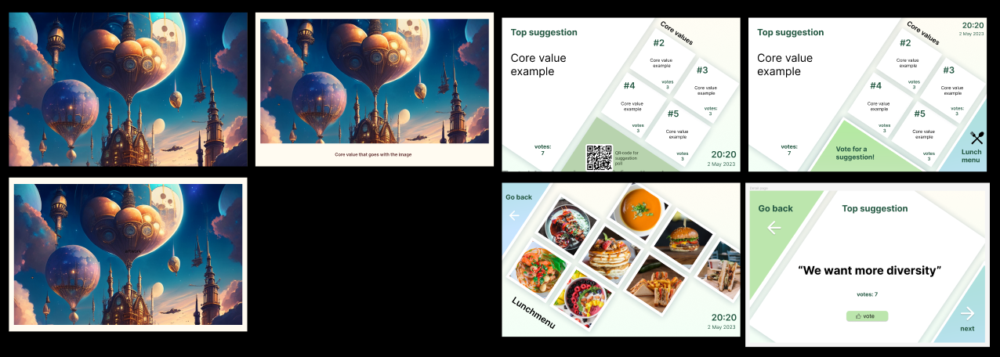
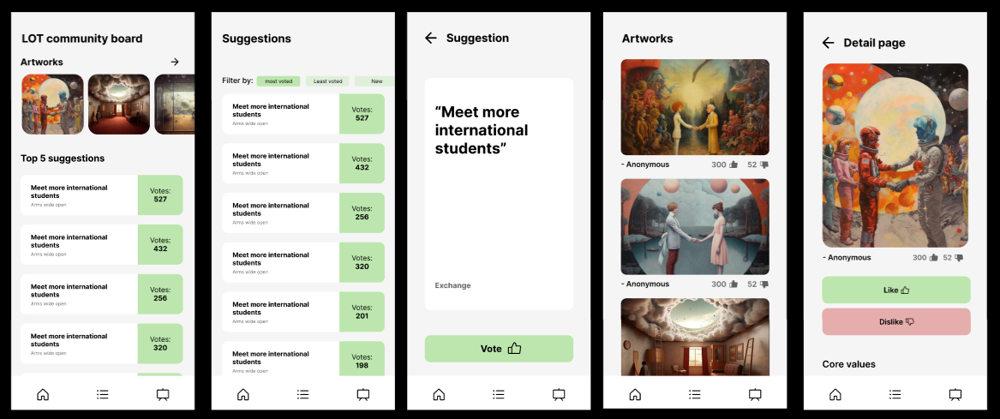
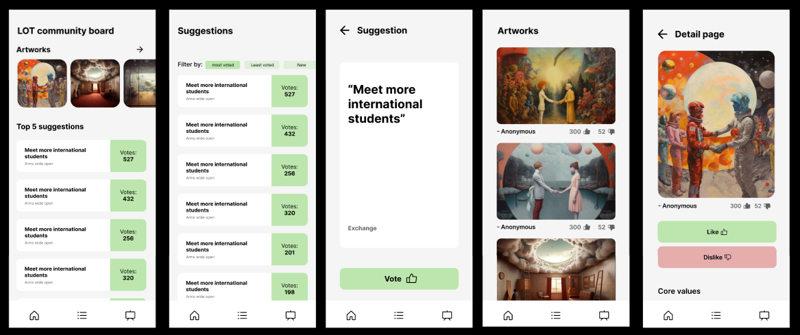

Poster
Internationaal groepsproject
Filter bij categorie
Poster

Projectplan

Brainstorming

Prototyping

Dagverslag

Reflectie
Goal-oriented interaction
User interaction (execution & validation)
Samen met twee anderen (Fabio en Kun) koos ik om het interactieve systeem te ontwerpen ter visuele demonstratie van ons idee.
Om te beginnen wilden we eerst wireframes ontwerpen om de opzet
van de UI te bepalen. Voor de prototype moesten we voor
verschillende platformen ontwerpen:
- De interactieve tafel
- TV-scherm met de AI gegenereerde afbeelding
- App voor mobiele schermen
Aanvankelijk hadden we ook een tablet, waarin gebruikers stemde op
suggesties, totdat het werd geschrapt na de feedbacksessie met de
adviseurs. Ervoor had ik wel enkele wireframes gemaakt, samen met
de interactieve tafel en TV. Voor de app is alleen de scherm voor
stemmen van suggesties.
Voor de interactieve tafel en tablet heb ik twee ontwerpen
gemaakt:
- Een standaard, vierkante ontwerp die de suggesties het
makkelijkst weergeeft zonder enige afleidingen in het ontwerp.
- Een diamant-vorming, modern ontwerp dat meer opvallend is en
beter aansluit met jonge studenten die technische opleidingen
doen.
Voor de TV heb ik drie ontwerpen gemaakt:
- Enkel de AI afbeedling
- Afbeelding met een contour om een schilderij te simuleren
- Afbeelding met contour en beschrijving van suggestie die erbij
hoort
De bedoeling van deze ontwerpen, is om de LOT-omgeving ook als een
soort bezichtiging te maken met AI-gegenereerde afbeeldingen.
Voor de app is alleen een scherm gemaakt voor het stemmen van de suggesties, aangezien het idee ervoor niet helemaal was uitgewerkt. Het ontwerp is rechthoekig om de suggesties makkelijk te weergeven voor kleinere schermen.
Na de wireframes-fase is er besloten om met mijn ontwerpen verder te werken. Voor de tafel en TV is gekozen voor de diamant-vormige ontwerpen. Hierna begonnen we met het maken van de high-fidelity prototypes. Ook hierin heb ik eerst meedere versies gemaakt voor de tafel en TV.
De gebruikte hoofdkleur is groen, dat vaak wordt geassocieerd met duurzaamheid en onderwijs. Dit is passend voor een project dat betrekking heeft op studenten en het milieu. Het algemene kleurenschema is licht pastel en wit, om een persoonlijkere, rustige uitstraling van de LOT-omgeving te geven. De knoppen zijn, naast groen, ook blauw om meerdere knoppen op een scherm beter te onderscheidden.
 

Met Fabio en Kun hebben we uiteindelijk deze definitieve ontwerpen
gemaakt voor Vestide om als advies te geven voor het ontwerpen
voor hun systeem. Hierin ben ik vooral gewerkt aan de:
- De homepage
- De lunchmenu
- Lijst suggesties en LOT community board in de app
Van de rest van de groep kregen de prototypes positieve feedback op het ontwerp en layout. Vanuit hier hebben we het project zodanig afgerond. Hierna hebben we de prototype gepresenteerd aan de stakeholders en andere groepen met een filmpje voor de videoreel van alle projecten.
🎨 Figma linkMet twee anderen studenten heb ik samengewerkt om de prototypes en wireframes te ontwerpen. Aan het einde hebben we elkaars ideeën kunnen combineren tot het eindresultaat.
Na het brainstormen hebben we prototypes ontworpen om alle functies visueel weer te geven voor meerdere platformen.